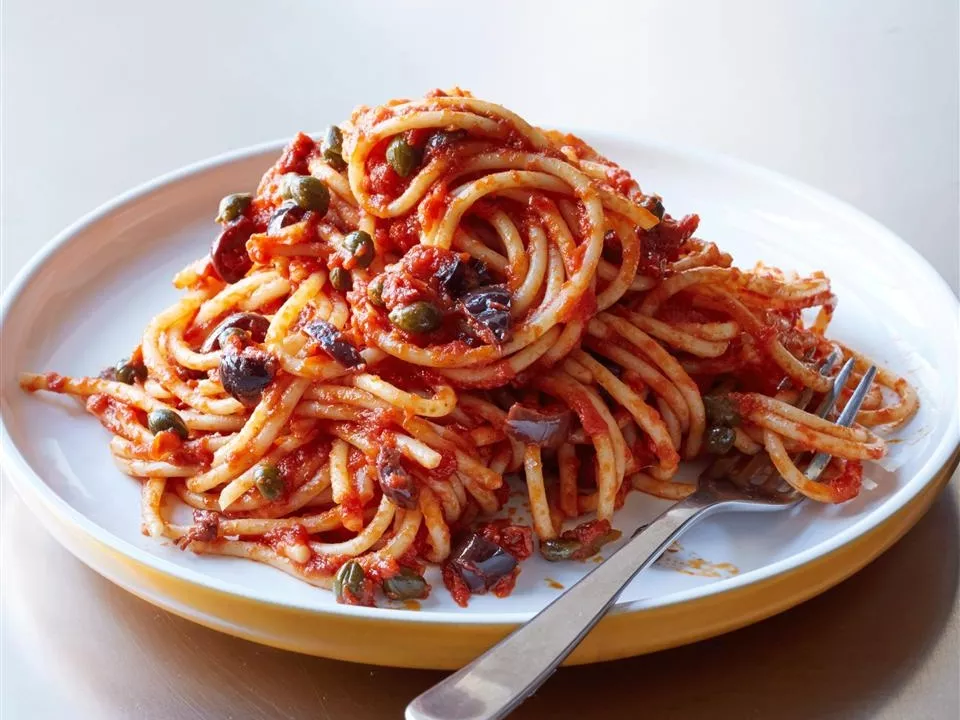

Puttanesca

Description
Puttanesca is a flavor-packed tomato pasta sauce flavored with olives and
anchovies. This sauce goes well with any type of spaghetti.
Ingredients
- 8 ounces spaghetti
- ½ cup olive oil
- 3 cloves garlic, minced
- 2 cups chopped tomatoes, pushed through a sieve
- 4 anchovy filets, rinsed and chopped
- 2 tablespoons tomato paste
- 3 tablespoons capers
- 20 Greek olives, pitted and coarsely chopped
- ½ teaspoon crushed red pepper flakes
Recipe steps
-
Bring a large pot of lightly salted water to a boil. Cook spaghetti in
boiling water for 8 to 10 minutes or until al dente; drain.
-
Heat oil in a skillet over low heat; cook garlic in oil until golden. Add
sieved tomatoes, and cook 5 minutes. Stir in anchovies, tomato paste,
capers, olives, and red pepper flakes. Cook 10 minutes, stirring
occasionally.
- Toss pasta with sauce, and serve.
- Grate a hefty amount of Parmesan